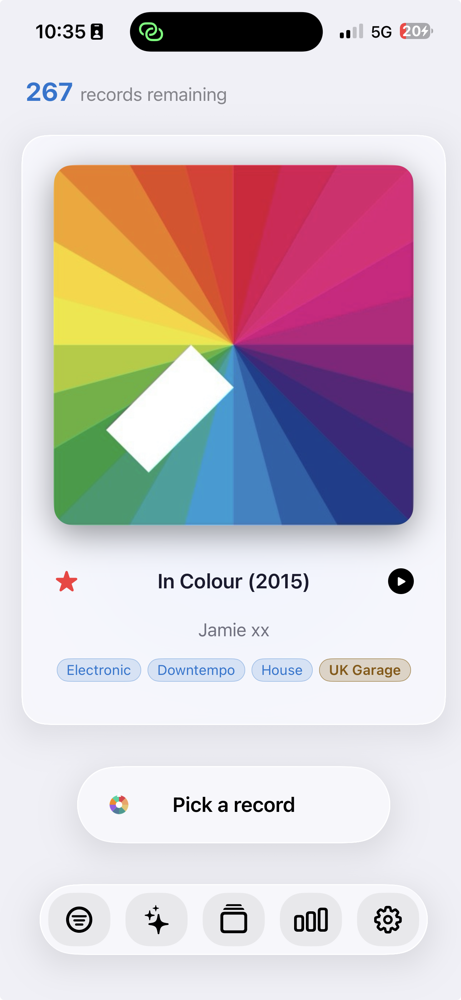

公平抽取
Favor less-played records, filter by year, genre, format, speed, or favorites, then swipe the cover to draw or undo.
再也不用煩惱下一張要聽哪張唱片
Rediscover your music collection with fair draws, natural cover swipes, an iPhone landscape selector, a clear record crate, and tools built for real collectors.

Record Picker
Record Picker 可編目黑膠、CD 與喜愛的專輯，並依篩選、收藏、排除項與當下心情推薦下一張唱片。

Favor less-played records, filter by year, genre, format, speed, or favorites, then swipe the cover to draw or undo.
Barcode scan, MusicBrainz, Discogs fallback, custom covers, duplicates, exclusions, wishlist, and browsable history stay easy to manage.
Cover on the left, full metadata on the right, centered Pick button, and floating toolbar for frictionless choosing.
A red star replaces the Favorite chip in the crate: one tap on iPhone or iPad is enough to mark or unmark.
App Store
Record Picker release notes, updated for version 1.4.
June 23, 2026
2026年6月22日
2026年6月18日
2026年6月17日

CSV 匯入、備份還原、條碼掃描與手動輸入可協助使用者從不完整目錄開始。
備份以及可讀 CSV/JSON 匯出由使用者主動啟動，並儲存到所選位置。
MusicBrainz、Discogs 與 Cover Art Archive 僅在你啟動查詢或補全時使用。

你新增、匯入、編輯、收藏、排除或抽選的專輯儲存在裝置上，可包含標題、藝人、發行資訊、類型、標籤、歷史、封面與中繼資料。
Record Picker 不運行使用者帳戶系統，也不會把你的收藏上傳到 Record Picker 伺服器。
透過條碼新增專輯時可使用相機。相機影像不會被 Record Picker 儲存或分享。
The barcode may be sent to MusicBrainz; when MusicBrainz does not know the reference, Record Picker queries Discogs to pre-fill the record sheet when the edition is found.
啟動中繼資料或封面搜尋時，Record Picker 可聯絡 MusicBrainz、Cover Art Archive 或 Discogs 等外部服務。
這些請求可能包含你提供的搜尋詞或條碼，僅在你明確啟動查詢時傳送。
Artwork searches use Cover Art Archive or a manual lookup chosen by the user. Images selected from Photos, Files, or the web stay under your control.
沒有第三方 AI 提供商，沒有雲端 AI；Apple Intelligence 留在裝置上
沒有第三方 AI 提供商，沒有雲端 AI；Apple Intelligence 留在裝置上
網路評論絕不會被自動擷取
使用 Apple Watch 配套 App 時，Record Picker 可透過 Apple 的裝置通訊功能同步必要收藏與挑選資訊。
The Watch companion can show the drawn record, pick the next one, mark a favorite, undo the last draw, and ask the iPhone to start playback.
Record Picker 可讓你匯入、匯出、備份或還原收藏檔案。這些檔案由你建立、選擇與管理。
Record Picker 不使用廣告追蹤，也不包含第三方廣告 SDK。
如對本私隱政策有疑問，請聯絡 support@recordpicker.app。

黑膠指南
三篇聚焦指南回答收藏者常見問題：現在播放什麼、如何使用有用的隨機選擇器，以及如何讓收藏保持活力。
黑膠指南
一份實用指南，幫你不用長時間盯著唱片架，也能選出下一張要播放的黑膠唱片。
隨機選擇器
為什麼隨機黑膠選擇器在尊重篩選器、喜好、排除項與聆聽語境時效果最好。
黑膠收藏
使用 Record Picker 對黑膠收藏進行編目、豐富、備份與重新發現的實用指南。
有關 App、匯入、備份或私隱的問題，請使用公開支援聯絡方式。